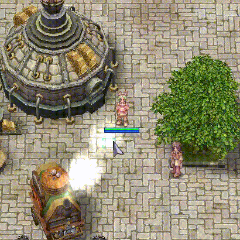

Guia de Interface e Atalhos Úteis
No guia de hoje traremos breves explicações sobre a interface e atalhos, ensinando os jogadores novos no Ragnarok e relembrando os antigos sobre utilidades dentro do jogo. Na interface do Ragnarok existem alguns atalhos que podem acelerar e facilitar algumas tarefas cotidianas, nesse guia explicaremos de forma sucinta alguns destes:
- 1 Atalhos úteis de HUD
- 2 1. Banco de Zeny. (Atalho: CTRL + B)
- 3 2. RODEX ou Email. (Sem atalho pré definido).
- 4 3. Contatos e Grupo. (ALT + Z).
- 5 4. Battle Mode e Atalhos Personalizados. (ESC -> BM/Shortcut Settings & ALT + M).
- 6 5. Lista de Atalhos (Alt + M).
Atalhos úteis de HUD
F11 - Fecha todas as janelas (Modo Captura de Tela).
F12 - Abre as janelas de Hotkeys.
Ctrl + Tab - Altera a transparência do mini-mapa no canto superior direito da tela.
Alt + aspas - Mostra / Oculta os ícones da interface completa no canto superior esquerdo da tela.
Alt + Y - Abre a janela de lista de comandos e é possível ver quais estão ligados/desligados.
1. Banco de Zeny. (Atalho: CTRL + B)
Já precisou de zeny em um personagem e ficou com preguiça só de imaginar em ter que utilizar uma 'dual account' para realizar todo o processo de transferência? seus problemas acabaram!
O banco de zeny serve justamente para isso, ele é compartilhado por todos os personagens de uma mesma conta, ou seja, caso você precise de zeny em um personagem, não é necessário passar para um amigo ou uma conta alternativa e fazer todo o processo via trade, se você ainda não utiliza esse recurso comece o quanto antes, isso com certeza irá salvar várias horas da sua jogatina.
2. RODEX ou Email. (Sem atalho pré definido).

Bom, e como nem só de zeny vive o homem.... muitas vezes precisamos também passar itens de uma conta a outra, ou até mesmo devolver aquele item emprestado do amigo que já foi dormir. Com o sistema de email é possível enviar itens e zeny para um personagem que esteja online ou offline, independente se ele faz parte ou não da mesma conta.
Basta abrir a interface completa com o atalho Alt + e buscar o ícone de um envelope, após isso, clique em "Criar mensagem" no canto superior da janela, no campo em aberto digite o nome do personagem que deseja enviar seus itens/zeny e clique em "Check name", confira as informações e tenha certeza de que esse é de fato o personagem ao qual deseja enviar. Digite um título e uma mensagem qualquer e por fim arraste os itens para os espaços no fim da janela, digite o zeny se for o caso, feito isso clique em "send" e prontinho, o envio e recebimento são instantâneos.
- Existe um limite de peso (2000) e uma taxa em zeny a ser paga conforme o peso dos itens.*
3. Contatos e Grupo. (ALT + Z).
Você não está jogando direito se essa lista não ficar cheia de antigas e novas amizades, além disso, nessa janela é possível criar e alterar as configurações de um grupo, como por exemplo experiência e/ou itens compartilhados ou individuais.
Nessa janela também é possível alterar o modo como você recebe as mensagens privadas, alterando para a aba "amigos" e clicando no ícone de lupa, ao desmarcar as 3 caixas de configuração de contatos, suas conversas não mais aparecerão como janelas independentes e passarão a ser exibidas em sua janela principal de mensagens. Essa interface pode ser utilizada para selecionar seus aliados ou você mesmo como alvo, como por exemplo um sacerdote curar e buffar um templário simplesmente clicando em seu nome na aba de grupo ou amigos, isso é útil principalmente quando há muitos alvos possíveis dentro de células muito próximas.
4. Battle Mode e Atalhos Personalizados. (ESC -> BM/Shortcut Settings & ALT + M).

Você já reparou que ao pressionar a tecla enter repetidas vezes, o campo para digitar mensagens "aparece" e "desaparece"?
Isso é devido a algo chamado "Battle mode"(ou BM), ao utilizar o BM, é possível usar outras teclas para os atalhos (e não mais somente F1-F9) além de também ser possível utilizar as outras barras de atalhos ao pressionar a tecla F12. Os atalhos podem ser editados na janela do BM pressionando ESC -> BM/Shortcut Settings. Nessa janela existe uma outra aba chamada "Interface", na qual é possível redefinir e visualizar os atalhos definidos atualmente para outras janelas como a de atributos e a de habilidades por exemplo.
5. Lista de Atalhos (Alt + M).

Imagine um universo no qual é possível não precisar digitar @go 0 toda vez que quiser ir para prontera... ou não precisar digitar aquele @storage toda vez que quiser abrir o seu armazém...
Bom... na verdade isso é possível, tudo o que você precisa fazer é usar o atalho ALT+M para abrir a janela de lista de atalhos, uma vez nela escolha o atalho (Alt+1 até Alt+0) e digite o comando ou frase que quiser e TCHÃRAN!. Seus atalhos estão configurados, nada mais de perder o seu precioso tempo!